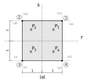

Teoria dos elementos de estado plano
Fundamentação
Uma estrutura ou peça estrutural somente pode ser analisada utilizado um estado plano se toda a sua geometria, todas as cargas aplicadas, todos os apoios e todos os quaisquer efeitos externos estiverem contidos em um mesmo plano. Caso contrário não se aplica a análise pelo estado plano.
Nos vamos trabalhar com dois tipos de estados planos: o estado plano de tensões, caracterizado por todas as tensões com valores que podem ser diferentes de zero estarem dentro do plano idealizado da geometria e o estado plano de deformações, caracterizado por todas as deformações com valores que podem ser diferentes de zero estarem dentro do plano idealizado da geometria da estrutura ou peça estrutural. As demais componentes de tensão ou deformação para o estado plano de tensão e de deformação respectivamente, que estão fora do plano sempre terão valor igual a zero.
Lembrando que a teoria aqui desenvolvida leva em conta algumas simplificações:
- o material deve estar com valores de tensão e/ou deformação dentro dos limites elasticos-lineares;
- as análises são sempre estáticas, ou seja, o carregamento é considerado como velocidade muito baixa e somente seu efeito após ser completamente aplicado é considerado;
- não são levados em conta nenhum efeitos de segunda ordem, portanto, os valores dos resultados sempre se referem a estrutura indeformada;
- a relação entre deformações e deslocamento é considerada linear, ou seja, o valor das deformações deve ser muito baixo.
Resumindo, a análise é estática linear.
Estado plano de tensão
Conforme já apresentamos mais de uma vez, o estado plano é caracterizado por tensões que ocorrem somente dentro de um plano específico da estrutura ou peça estrutural, portanto, sendo, por exemplo, esse plano o plano r-s, a relação constitutiva do material no regime elástico-linear para esse estado plano é escrita entre deformações e tensões como:
Sendo $\textbf{C}$ a matriz de conformidade do material.
Observe que a deformação $\varepsilon_{t}$ perpendicular ao plano r-s é determinada com as tensões $\sigma_r$ e $sigma_s$. Como em elementos finitos os deslocamentos são nosso primeiro resultado e as deformações são calculadas com esses deslocamentos e as derivadas das funções de interpolação, precisamos dessa relação constitutiva escrita de forma inversa, com as tensões sendo calculadas pelas deformações. Porém, a matriz não é quadrada, ou seja, não inverte. Porém, como a deformação fora do plano $\varepsilon_t$ é função das tensões em r e s ela poderá ser determinada posteriormente ao cálculo das tensões ou ainda calculada com as deformações em r e s. Assim, nossa relação constitutiva simplificada para o estado plano de tensões é:
Com:
Ou:
Com a relação constitutiva simplificada, podemos escrever sua forma inversa para determinar as tensões de acordo com as deformações:
De forma condensada:
Sendo $\textbf{D}$ a matriz constitutiva simplificada do material no estado plano de tensão. Lembre que o módulo de elasticidade transversal G é:
Estado plano de deformação
Já o estado plano de deformações é caracterizado, como já dito, por deformações que somente ocorrem no plano específico da estrutura, portanto, sendo esse plano o plano r-s, a relação constitutiva do material no regime elástico-linear para o estado plano de deformação é escrita entre tensões e deformações como:
Sendo $\textbf{D}$ a matriz constitutiva do material.
Note que a tensão fora do plano $\sigma_t$ é determinada em função das deformações no plano e portanto pode ser calculada a parte. Dessa forma também podemos escrever uma relação constitutiva simplificada quadrada para o estado plano de deformações como sendo:
De forma condensada:
Sendo $\textbf{D}_d$ a matriz constitutiva simplificada do material no estado plano de deformação. E a tensão fora do plano por ser determinada por:
Observe que a única similaridade entre as relações constitutivas do estado plano de tensão e deformação é o cálculo da tensão de cisalhamento, sendo essa sempre função da deformação angular no plano multiplicada pelo módulo de elasticidade transversal.
Elementos do estado plano
Nós vamos trabalhar com dois elementos para o estado plano, um quadrilateral e outro triangular, ambos bilineares e isoparamétricos com dois graus de liberdade de translação por nó e 4 nós por elemento para o elemento quadrilateral e 3 nós para o elemento triangular. Significa que vamos utilizar funções de interpolação bilineares (como se fossem lineares por direções r e s) e essas mesmas funções serão utilizadas para interpolar as coordenadas do elemento padrão para o elemento na estrutura.
Aqui temos uma nova definição: formulação isoparamétrica e o elemento padrão. Na verdade já vinhamos utilizando um elemento padrão desde a treliça, que é o nosso elemento no sistema r-s. Ele sempre era horizontal, com o sistema local com origem no centro do elemento e com comprimento definido em $l$. A transformação dele em um elemento da estrutura era feita com a utilização do comprimento do elemento da estrutura e a matriz de decomposição ou rotação. No entanto, para o estado plano essa definição precisa ser melhorada e alguns conceitos precisam ser aplicados para conseguirmos montar um elemento padrão que consiga ser escrito para quaisquer elementos de estado plano da estrutura.
A questão é um pouco mais complexa. Não iremos conseguir utilizar a mesma metodologia dos elementos padrões unidimensionais, pois o nosso elemento do estado plano pode estar distorcido na estrutura. Sendo assim, não funciona tratar simplesmente dos comprimentos e da rotação é preciso levar em conta os comprimentos diferentes e a distorção desse elemento. Outro problema é a dificuldade de integrar a matriz de rigidez do elemento quando ele está distorcido. Como você integraria em r e s os elementos abaixo em sua área?
 4 nós quadrilateral e (b) 3 nós triangular.")
Complicado não? Os limites de integração seriam retas. E como você integraria em r e s o elemento abaixo em sua área?
 4 nós quadrilateral e (b) 3 nós triangular.")
Bem simples, não acha? Os limites de integração em ambas as direções seriam de -1 a 1 para o quadrilateral e de 0 a equação da reta ($s = -r + 1$) e de 0 a 1. Esses serão nossos elementos padrões quadrilateral e triangular para o estado plano.
Transformação de coordenadas e distorção do elemento
Muito bem, mas e o tal de isoparamétrico? Essa definição envolve a questão de que nem todos os elementos da malha da estrutura irão possuir lado igual a 1 ou 2 e serem regulares como os padrões. A transformação do elemento padrão no elemento da malha da estrutura vai levar em conta a modificação dos comprimentos e uma possível distorção do elemento. Fazemos essa transformação de coordenadas e de forma utilizando o operador Jacobiano definido pela matriz Jacobiana, reduzida para uma transformação bidimensional.
O valor absoluto do Jacobiano de uma transformação de um sistema de coordenadas é também utilizado para converter uma integral múltipla de um sistema para outro, ou seja, podemos calcular a integral complicada do elemento irregular aplicando o Jacobiano na integral simples do elemento padrão. No caso bidimensional, também mede o quanto a área do elemento padrão é distorcida na transformação. Sendo o elemento da estrutura definido no sistema x-y, a matriz Jacobiana de transformação do sistema r-s para o sistema x-y é:
Certo, mas em elementos finitos, como isso funciona? Eu não tenho as coordenadas x-y do elemento irregular escritas como uma função de r-s. Para isso nos iremos utilizar as mesmas funções de forma utilizadas na interpolação dos deslocamentos para a transformação de coordenadas entre o r-s e o x-y aplicando o mesmo conceito de interpolação porém agora nas coordenadas dos nós ao invés dos deslocamentos, ou seja:
Sendo $\textbf{x}$ as coordenadas em x-y, $\textbf{x} = \lbrace x \ y \rbrace^T$, interpoladas pelas funções de interpolação do elemento padrão $\textbf{N}$ multiplicadas pelas coordenadas dos nós do elemento da estrutura $\textbf{x}_e$, com as coordenadas x na primeira coluna e as y na segunda coluna. Os elementos que utilizam esse conceito são conhecidos por elementos isoparamétricos.
Essa interpolação das coordenadas serve para conseguirmos escrever as coordenadas dos elementos em x-y em função de r-s, $x \rightarrow x(r, s)$ e $y \rightarrow y(r, s)$, ou seja, cada ponto no sistema x-y equivale a um ponto específico no sistema r-s relacionados pela transformação entre os sistemas. Reescrevendo a equação $\ref{eq:xxe}$ expandindo $\textbf{N}$ e $\textbf{x}_e$, temos:
Sendo $N_1(r, s) $ a $N_4(r, s) $ as funções de interpolação do elemento quadrilateral padrão de 4 nós como exemplo, que vamos chamar simplesmente de $N_1$, $N_2$, $N_3$ e $N_4$. No triangular teríamos apenas 3 parcelas na soma.
Como sabemos que as coordenadas dos nós do elemento da estrutura $\textbf{x}_e$ são constantes as derivadas do Jacobiano se referem às derivadas das funções de interpolação, e portanto o Jacobiano do elemento quadrilateral de 4 nós, resulta:
Além disso, podemos utilizar o Jacobiano para montar as derivadas das funções de interpolação no sistema x-y, utilizadas para montar a matriz $\textbf{B}$, obtidas em função das derivadas das funções de interpolação $i$ no r-s pela regra da cadeia. Sabendo que as funções de interpolação $N_i$ dependem de $x(r, s)$ e de $y(r, s)$ e que esses por sua vez dependem de r e s, temos pela regra da cadeia:
Ou, de forma matricial:
Portanto, as derivadas das funções de interpolação no sistema x-y são obtidas pela multiplicação das derivadas das funções de interpolação no sistema r-s multiplicadas pelo inverso da matriz Jacobiana.
No acaso do elemento triangular padrão as mesmas definições são válidas, apenas reduzindo-se a quantidade de nós de 4 para 3.
Integração numérica
Antes de calcularmos as matrizes de rigidez dos elementos quadrilaterais e triangulares precisamos comentar um pouco sobre a integração dos elementos padrão. Serão necessárias as integrais em r e s das 8 derivadas das funções de interpolação no sistema x-y, escritas na matriz $\textbf{B}$ que pré e pós-multiplica o tensor constitutivo do material. Essa integral pode se tornar um tando complicada para ser resolvida de forma analítica como vinhamos fazendo com os elementos unidimensionais e em alguns casos, inclusive, pode nem ter solução.
Esse problema é contornado com a utilização da integração numérica e mais especificamente utilizaremos a quadratura de Gauss. Basicamente a quadratura de Gauss aproxima o valor de uma integral através de uma somatória ponderada de valores das funções a serem integradas em pontos específicos dentro do elemento conhecidos como pontos de Gauss multiplicadas por determinados pesos. Por exemplo, no caso de uma função de $f(x, y)$ para nosso elemento padrão quadrilateral, podemos escrever:
Sendo $n_x$ o número de pontos de Gauss $P_i$ em x, $n_y$ o número de pontos de Gauss $P_j$ em y, $f(P_i, P_j)$ a função $f(x, y)$ avaliada nos pontos de Gauss $P_i, P_j$, em outras palavras com x substituído pelo valor x de $P_i$ e y substituído pelo valor y de $P_j$ e $W_i$ e $W_j$ os pesos respectivos dos pontos $P_i$ e $P_j$. Claro que no caso da integração das matrizes de rigidez dos elementos do estado plano, nos iremos substituir a função $f(x, y)$ pelo resultado da multiplicação $\textbf{B}^T \textbf{D} \textbf{B} h det(\textbf{J})$, sendo $det(\textbf{J})$ o determinante da matriz Jacobiana para levar em conta a distorção da área do elemento, h a espessura do elemento e $\textbf{D}$ a matriz constitutiva simplificada do estado plano de tensão ou deformação conforme o caso, conforme veremos com mais detalhes adiante.
Com essa introdução sobre estado plano e já sabendo como transformar o nosso elemento padrão para o elemento da malha da estrutura e resolver sua integração aproximada, podemos então calcular as matrizes de rigidez dos elementos quadrilaterais e triangulares.
Elemento quadrilateral
O elemento quadrilateral padrão que usaremos é o isoparamétrico bilinear de 4 nós com 2 unidades de comprimento nos lados.
Funções de interpolação
As funções de interpolação utilizadas serão as bilineares Lagrangenas (derivadas por poliônimos de Lagrange), afinal temos 4 nós por elemento a a mesma interpolação será utilizada por ambos os graus de liberdade do nó. A interpolação dos deslocamentos no domínio segue a escolha dos polinômios de acordo com a quantidade de nós do elemento, no nosso caso n = 4, com o auxílio do triângulo de Pascal para polinômios.

Assim podemos escrever o campo de interpolação dos deslocamentos u na direção de r e deslocamentos v na direção de s do elemento do estado plano como:
A integração numérica pela quadratura de Gauss é feita utilizando dois pontos de Gauss por direção, pois com essa quantidade é possível integrar de modo exato um polinômio de até grau 3, conforme os "x" na figura.

As coordenadas e os pesos desses pontos para o elemento padrão em específico trabalhado aqui são mostrados na tabela abaixo:
| Ponto de Gauss, Pi | Coordenadas r, s | Peso, Wi |
|---|---|---|
| $P_1$ | $\dfrac{1}{\sqrt{3}}$, $\dfrac{1}{\sqrt{3}}$ | 1 |
| $P_2$ | $-\dfrac{1}{\sqrt{3}}$, $\dfrac{1}{\sqrt{3}}$ | 1 |
| $P_3$ | $-\dfrac{1}{\sqrt{3}}$, $-\dfrac{1}{\sqrt{3}}$ | 1 |
| $P_4$ | $\dfrac{1}{\sqrt{3}}$, $-\dfrac{1}{\sqrt{3}}$ | 1 |